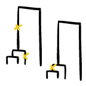

Alison F. Feder
 I combine evolutionary theory, simulation and experimentally- and
clinically-derived sequencing data to better understand
adaptation in time and space. I'm currently a Miller Fellow with Oskar Hallatschek and Monty Slatkin in the Department of Integrative
Biology at Berkeley. Previously, I received my PhD in Biology at Stanford University advised by Dmitri Petrov.
I combine evolutionary theory, simulation and experimentally- and
clinically-derived sequencing data to better understand
adaptation in time and space. I'm currently a Miller Fellow with Oskar Hallatschek and Monty Slatkin in the Department of Integrative
Biology at Berkeley. Previously, I received my PhD in Biology at Stanford University advised by Dmitri Petrov.
Research
Here are some of the projects I've worked on over the past several years, and you can find a current list of publications on Google scholar.
 Evolutionary Dynamics in Structured Populations Under Strong
Population Genetic Forces (2019)
[paper in G3]
Evolutionary Dynamics in Structured Populations Under Strong
Population Genetic Forces (2019)
[paper in G3] Alison Feder, Pleuni Pennings, Joachim Hermisson*, Dmitri Petrov*
 The Relationship Between Haplotype-Based FST and Haplotype
Length (2019)
The Relationship Between Haplotype-Based FST and Haplotype
Length (2019)[paper in Genetics, video abstract]
Rohan Mehta, Alison Feder, Simina Boca, Noah Rosenberg
 The clarifying role of time series data in the population
genetics of HIV
(2018)
The clarifying role of time series data in the population
genetics of HIV
(2018) [bioRxiv]
Alison Feder, Pleuni Pennings, Dmitri Petrov
 Within-patient HIV mutation frequencies reveal fitness costs of CpG
dinucleotides, drastic amino acid changes and G->A mutations
(2018)
Within-patient HIV mutation frequencies reveal fitness costs of CpG
dinucleotides, drastic amino acid changes and G->A mutations
(2018) [paper in PLOS Genetics]
Kristof Theys*, Alison Feder*, Maoz Gelbart*, Marion Hartl, Adi Stern, Pleuni Pennings
 High resolution spatio-temporal assessment of SHIV evolution reveals a highly dynamic
process within the host (2017)
High resolution spatio-temporal assessment of SHIV evolution reveals a highly dynamic
process within the host (2017) [paper in PLOS Pathogens,video abstract]
Alison Feder, Christopher Kline, Patricia Polacino, Mackenzie Cottrell, Angela Kashuba, Brandon Keele, Shiu-Lok Hu, Dmitri Petrov, Pleuni Pennings, Zandrea Ambrose
 More effective drugs lead to harder selective sweeps in the evolution
of drug
resistance in
HIV-1 (2016)
More effective drugs lead to harder selective sweeps in the evolution
of drug
resistance in
HIV-1 (2016)[paper in eLife, video abstract]
Alison Feder, Soo-Yon Rhee, Susan Holmes, Bob Shafer, Dmitri Petrov and Pleuni Pennings
 The population genetics of drug resistance evolution in natural
populations of viral, bacterial and eukaryotic pathogens. (2016)
The population genetics of drug resistance evolution in natural
populations of viral, bacterial and eukaryotic pathogens. (2016) [paper in Molecular Ecology]
Ben Wilson*, Nandita Garud*, Alison Feder*, Zoe Assaf*, and Pleuni Pennings

Identifying Signatures of Selection in Genetic Time Series (2014)
[paper in Genetics]
Alison Feder*, Sergey Kryazhimskiy*, Joshua Plotkin
 Comparative analysis of derived mutations across human populations (2013)
[MSc thesis]
Alison Feder (advised by Gil McVean)

LDx: estimation of linkage disequilibrium from high-throughput pooled resequencing data.
[paper in PLOS One, download LDx]
Alison Feder, Dmitri Petrov, Alan Bergland

Natural selection affects multiple aspects of genetic variation at putatively neutral sites across the human genome.
[paper in PLOS Genetics]
Kirk Lohmueller, Anders Albrechtsen, Yingrui Li, Su Yeon Kim, Thorfinn Korneliussen, Nicolas Vinckenbosch, Geng Tian, Emilia Huerta-Sanchez, Alison Feder, Niels Grarup, Torben Jørgensen, Tao Jiang, Daniel R. Witte, ... , Rasmus Nielsen

Estimating the bias incurred when estimating phylogenetic timescales with incorrect nucleotide substitution models
with Warren Ewens - Spring 2009
Other media
- Video abstract for 'The Relationship Between Haplotype-Based FST and Haplotype Length ':
- Here's my Milner Prize lecture from September, 2018.
- Here's my talk from the Crow Award Finalist symposium at PEQG in May, 2018.
- Here's a seminar I gave at the Center for the Inference and
Dynamics of Infectious Disease (CIDID) at the Fred Hutch in September,
2017:
- Video abstract for 'A spatio-temporal assessment of simian/human immunodeficiency virus (SHIV) evolution reveals a highly dynamic process within the host':
- A Muller diagram I drew was featured
as part of the cover of Molecular Ecology's special issue on 'Detecting Selection in Natural Populations.'
- Video abstract for 'More efficient drugs lead to harder sweeps in the evolution of drug resistance in HIV-1':
{kind=link}
Contact
- e-mail: affeder@berkeley.edu
Berkeley, CA 94720
Brief CV
[Full CV]- Current: Miller Fellow
UC Berkeley, 2018-present
- PhD Biology
Stanford University, 2018
- MSc (Res) Statistics
University of Oxford, 2013
- BA Mathematics
University of Pennsylvania, 2012
I have been fortunate to receive support from: